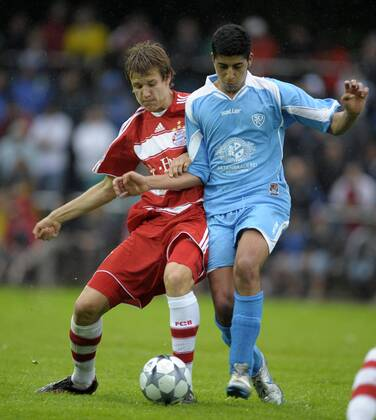

Video & Medien
SVK-TV.
Spielberichte, Interviews, historische Aufnahmen und Vereinsvideos an einem Ort.
Vorbereitet
Video-Kategorien
Videos können später über YouTube oder Instagram eingebunden werden.
Spielzusammenfassungen
Trainerinterviews
Jugendturniere
Historische Spiele
Stadion & Verein
Saisonrückblicke
Medienarchiv
Video meldenBereit für Vereinsvideos
Die Seite ist so aufgebaut, dass später nur noch Video-Links ergänzt werden müssen.